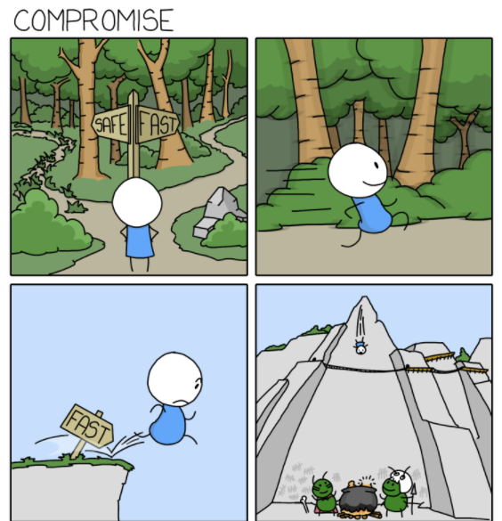
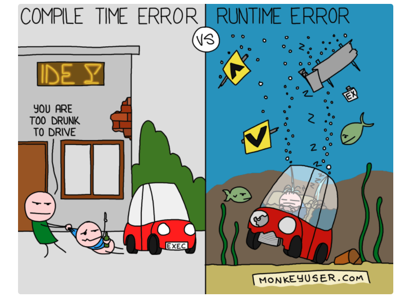
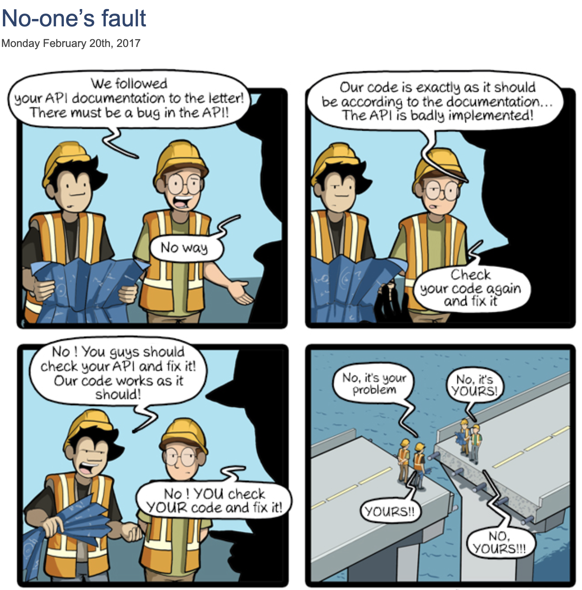

Einführung
Yuqiu (YuCHEW wie CHEWing gum aus dem Englischen)
ProfilVorstellungsrunde
Erwartung und Fragen bzgl. Softwareentwicklung
Meine Motivation
Methoden, Prinzipien erlernen
- Kein auswendig lernen: stick to the process
- Lernen aus Projekterfahrungen
- Mindset: Ich will das verstehen
übertrieben oder die Realität ?
Software engineer interns on their first day be like...Lebenlanges Lernen

Definition: SOFTware
Soft ≠ Hard
Arten von Software
Kapitel:
- git
- agile development principles
- clean coder
- architecture: arc42
- best practices
- jhipster
- soft skills
- cicd
Referenzen:
- monkeyuser.com
- arc42 Schulung (isaqb)
- medium
- clean code (uncle bob)
- youtube
- https://www.commitstrip.com/
- https://blog.codecentric.de/en/2019/06/test-driven-development-theory-practice/
GIT
Git Befehle
feature branching workflow

trunk based development


von Wasserfall nach Agile


build POC!


Antipattern
agile development principles
Every piece of code should be tested !

???

???

Wieso ist es kein best practice ?

Häufig...
- who are we: software developers.
- what we do: we create bugs.
- what do we do then: we fix them, and create some more !

TDD

The Three Rules of TDD
- Write production code only to pass a failing unit test.
- Write no more of a unit test than sufficient to fail (compilation failures are failures).
- Write no more production code than necessary to pass the one failing unit test.
Weniger TrailAndError

Weniger Debugging


Wozu Pair Programming ?
Be humble, be stupid
Know what you know. Know what you don't know

Langfristig...

Integrationstests

Refactoring

Refactoring-Techniken
Refactoring Cliche
Technische Schulden


Extreme Programming Prinzipien
Mehrwert von Schätzen
Refinement
Ist manchmal schwierig

Besonders schwierig bei Bugs
Aber Schätzen ist wichtig für Projektmanagement

clean coder
architecture
Die Schildkröte vs der Hase
Was ist Software Architektur ?


"alte" Docus
- nicht vorhanden, veraltet, doppelt
- chaotisch
- viel zu viel: z.B. Pflichtenheft, Lastenheft
- painful
Wieso Arc42
painless documentation- lean, lightweight
- strukturiert, alles was man braucht
- verständlich
- wartbar

Was muss ein Architekt können? t-shaped

Auswahl von Werkzeugen müssen begründet werden
Externe Schnittstellen ?!
aktiv nach wichtigen Anforderungen fragen

Anforderungen mit konkreten Beispielen beschreiben
Die App muss auf einem mobilen Browser in weniger als 7 Tage programmiert und getestet werden können
Mit Kunden kommunizieren
und dann schriftlich festhalten (Meeting minutes)
besonders wenn konkurrierende Anforderungen abgewägt werden müssen
Änderbarkeit vs Robustheit vs Performance
Muss man denn alles dokumentieren ?
nein! das wichtigste mit prägnanter Sprache
häufig ändernde Sachen bewusst leer lassen / verweisen
Baupläne für Häuser / Wohnungen
- Grundbuchauszug
- Baubeschreibung
- Flurkarte, Teilungserklärung
- Grundriss, Wohnflächenberechnung
- Energieausweis
- Elektroplan
- Wirtschaftsplan (teilweise nur bei Wohnungen)
Architekturpläne für Software: Arc42
- Kontext
- Laufzeitsicht
- Verteilungssicht
- Bausteinsicht
- Liste von Requirements
- Liste von Qualitätsanforderungen
- Übergreifende Konzepte
best practices
20 80 Regel
Cracking the coding Interview